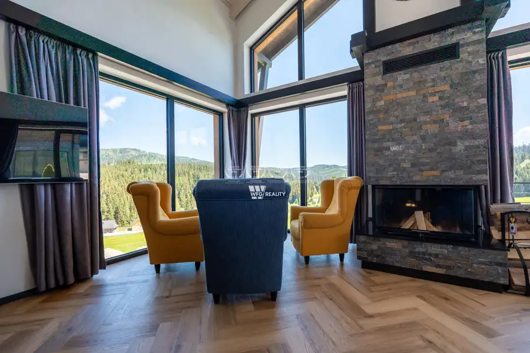
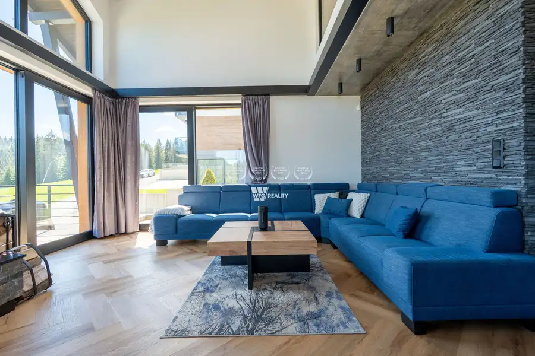
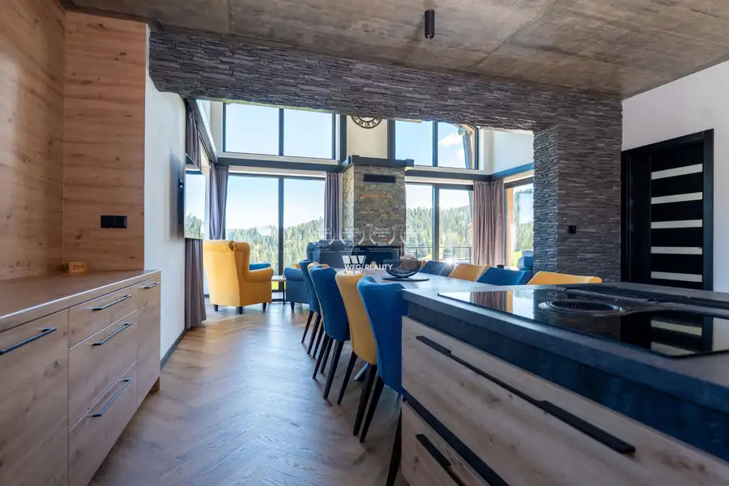
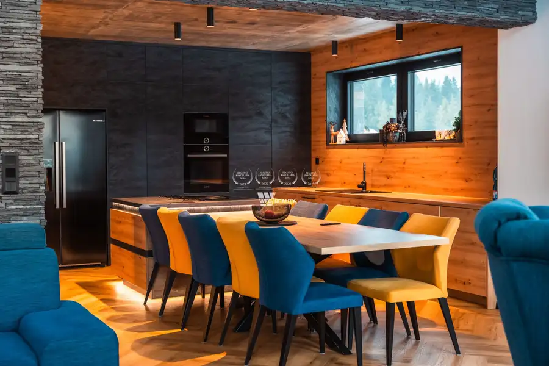
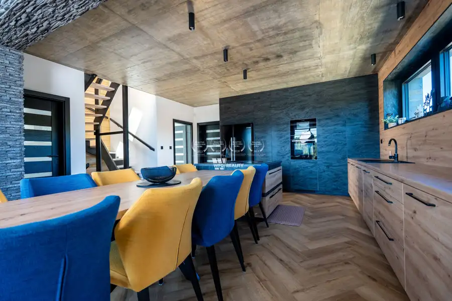
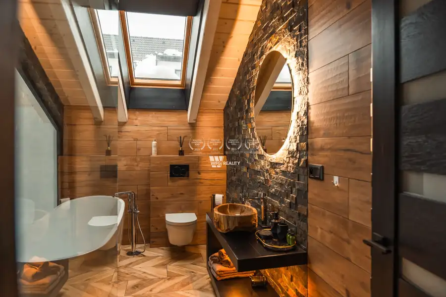
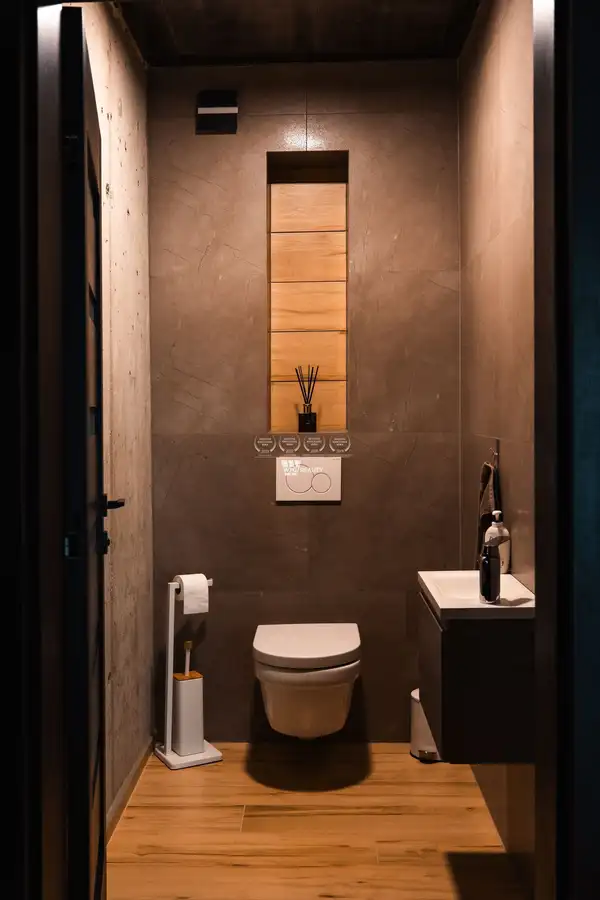
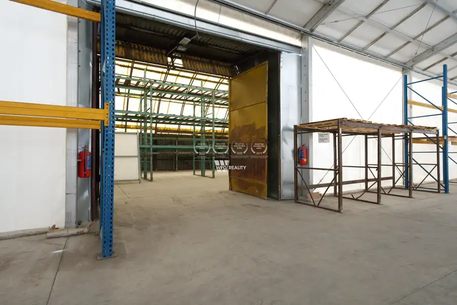
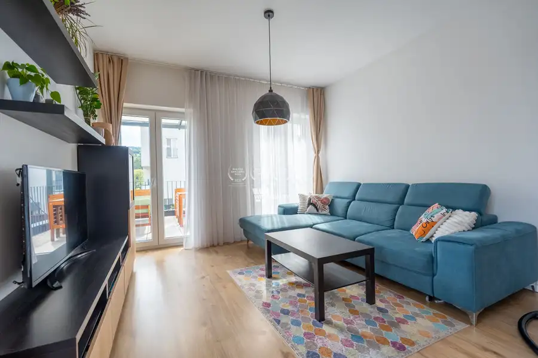
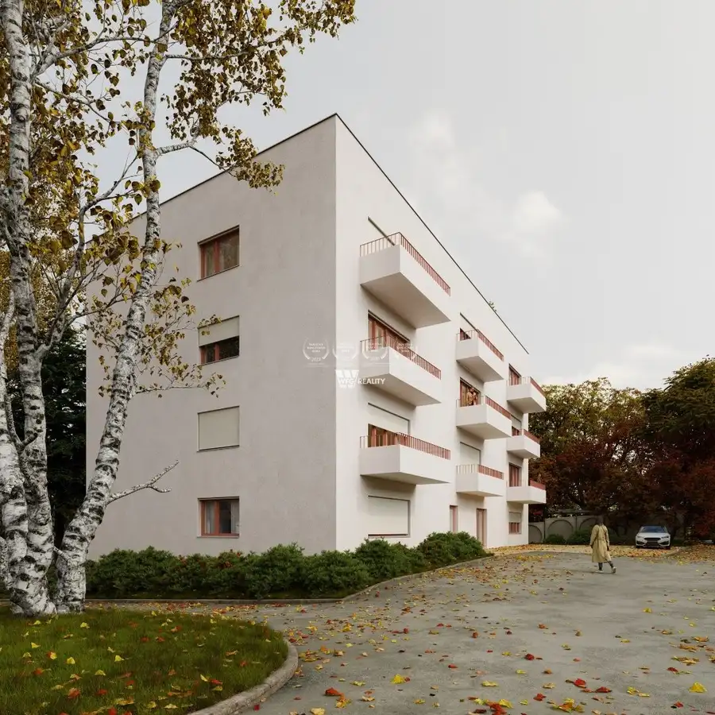

NOVOSTAVBA_Chalet ako z Álp priamo na svahu s pozemkom /575m2/ súkromný wellness a ski in-ski out_Oravská Lesná
Oravská Lesná







- Plocha350 m²
- StavNovostavba
O nehnuteľnosti
3D prehliadka nehnuteľnosti: https://my.matterport.com/show/?m=vrRDG67JGM1WFG reality Vám exkluzívne ponúkajú na predaj horský Chalet s pozemkom o výmere 575m2 situovaný priamo v lyžiarskom stredisku Orava Snow v obci Oravská Lesná. Táto výnimočná rekreačná nehnuteľnosť sa nachádza v bezprostrednej blízkosti zjazdovky, čo umožňuje pohodlný prístup na svah bez potreby využívania automobilu. Chalet je navrhnutý s dôrazom na komfort, funkčnosť a celoročné využitie, či už na súkromnú rekreáciu alebo ako investícia určená na krátkodobý prenájom.Dominantou interiéru je priestranná spoločenská miestnosť s krbom a veľkoformátovým presklením, ktoré zabezpečuje dostatok denného svetla a výhľady na okolité horské prostredie. Interiér kombinuje prírodné materiály, kvalitné spracovanie a nadčasový dizajn.Dispozícia nehnuteľnosti poskytuje komfortné ubytovanie pre viacero osôb. Súčasťou chaletu je plne vybavená kuchyňa, viacero spální, dostatok úložných priestorov a technické zázemie potrebné pre pohodlný pobyt.K vybaveniu patrí aj súkromná wellness zóna s vírivkou, oddychovým priestorom a barom. Praktickým benefitom je lyžiareň vybavená elektrickým sušičom lyžiarok, ako aj dostatočná kapacita parkovania priamo pri objekte.Hlavnou výhodou nehnuteľnosti je jej poloha v rámci lyžiarskeho strediska Orava Snow. Priamy prístup k svahu patrí medzi najvyhľadávanejšie parametre horských rekreačných nehnuteľností a na slovenskom trhu predstavuje pomerne obmedzenú ponuku.Oravská Lesná je obľúbenou rekreačnou lokalitou severného Slovenska. V zimných mesiacoch ponúka kvalitné podmienky na lyžovanie a ďalšie zimné športy, počas leta je vyhľadávaná pre turistiku, cykloturistiku a pobyt v prírode. Lokalita sa vyznačuje čistým horským prostredím, dobrou dostupnosťou a stabilným záujmom návštevníkov počas celého roka.Chalet Moon predstavuje zaujímavú príležitosť pre záujemcov o vlastné rekreačné bývanie v horách, ako aj pre investorov hľadajúcich nehnuteľnosť s potenciálom celoročného využitia a prenájmu.Ak Vás táto ponuka zaujala, neváhajte ma kontaktovať na telefónnom čísle 0905 809 919 alebo e-mailom balko@wfg.skSpoločnosť WFG reality poskytuje služby v oblasti realitného sprostredkovania a poradenstva viac ako 15 rokov. Je držiteľom ocenenia Realitná kancelária roka udeleného Realitnou úniou SR pre stredoslovenský región za roky 2019 a 2020 a pre Žilinský kraj za roky 2022 a 2023.
Parametre
- Bezpečnosť
- Alarm, Kamerový systém, Bezpečnostné dvere, Strážna služba, Elektronický zámkový systém, Videovrátnik
- Doprava
- Diaľkový autobus, Cesta, Cyklistická infraštruktúra
- Druh
- Chata, drevenica, zrub
- Dátum zverejnenia
- 11. 06. 2026
- Energetický certifikát budovy
- V príprave
- Plocha pozemku
- 575 m²
- Počet kúpeľní
- 5
- Počet nadzemných podlaží
- 2
- Počet spální
- 5
- Počet vonkajších parkovacích miest
- 5
- Prístupová komunikácia
- Asfaltová
- Rok výstavby
- 2025
- Stav nehnuteľnosti
- Novostavba
- Telekomunikácie
- Internet, Optická sieť
- Terás
- 2
- Terén pozemku
- Rovinatý
- Typ
- Predaj
- Typ konštrukcie
- Tehlová, Pórobetón (Ytong)
- Vybavenie
- Technická miestnosť, Vyhradené parkovanie, Strážna služba, Bezbariérový prístup, Detské ihrisko, Zimná záhrada, Dielňa, Nabíjacia stanica elektromobilov, Vonkajší krb, Kočikáreň, Krb, Bazén, Záhrada, Recepcia, Fitnes, Iná, Práčovňa, Altánok / posedenie, Sauna, Zabezpečovacie zariadenie, Záhradný domček, Úschovňa bicyklov, Terasa, Vonkajšie parkovacie miesto
- Vykurovanie
- Podlahové, Tepelné čerpadlo, Krb
- Zastavaná plocha
- 130 m²
- Úžitková plocha
- 350 m²
Kde to je


Mohlo by Vás zaujímať

Komerčné priestoryNové 9 500 €Prenájom skladovacieho, dielenského a admin. areálu - Martin Martin 2080 m²
BytNové 238 000 €NOVOSTAVBA_3 izb. byt s balkónom a parkovaním /81m2/ Kamence - Kysucké Nové Mesto Kysucké Nové Mesto 3-izbový81 m²3. podlažie
BytNové 161 900 €NOVOSTAVBA_1 izb. apart. s balkónom "č.307" /37m2/ CENTRUM - Žilina Žilina 1-izbový37 m²3. podlažie